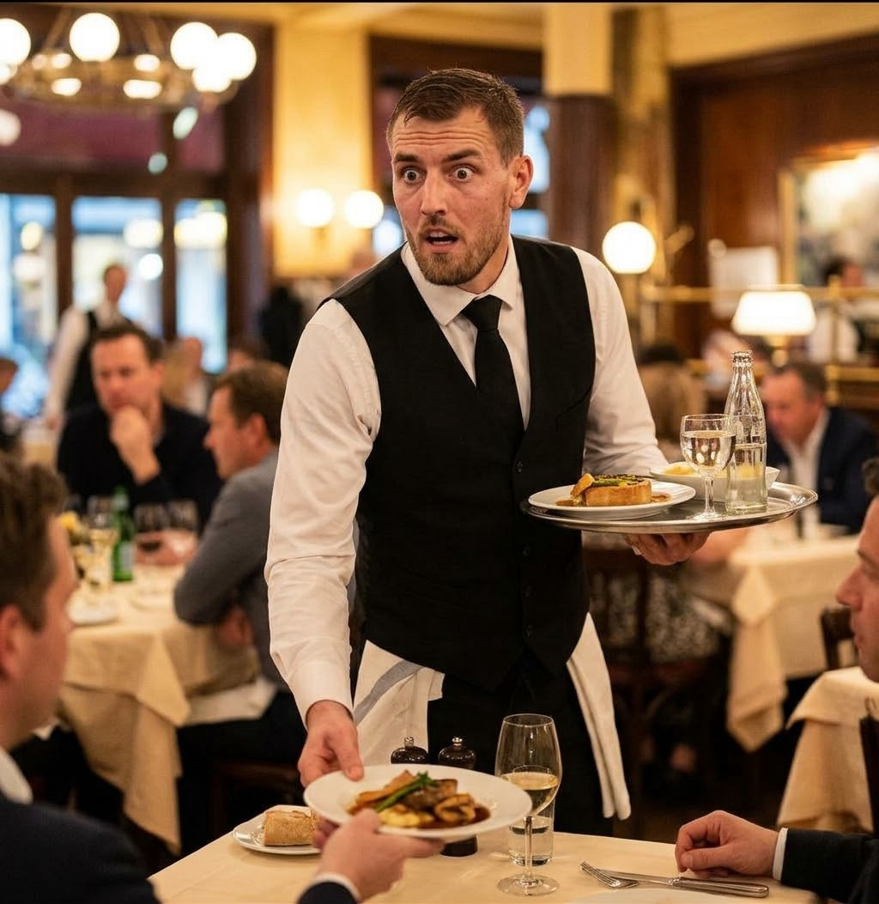

Bistro Kovárna
Moderní česká kuchyně v srdci Ostravy
Náš tým

Enrico Pešta – šéfkuchař
Vyučil se v Ostravě a později vařil v Praze a ve Vídni. K ohništi se rozhodl vrátit po návratu domů. Jeho nejoblíbenější jídlo je hutnický guláš. V Kovárně vede kuchyni od otevření a každé ráno osobně vybírá suroviny od místních farmářů. Největší radost mu dělá, když se host vrátí kvůli svíčkové z ohně podruhé.

Luca Brassi – cukrář
Autor našeho Kovárenského dortu. Každé ráno peče dezerty podle receptů své babičky a přidává k nim moderní nápady. Vystudoval cukrářský obor v Olomouci a rád kombinuje klasické chutě, třeba jablka a skořici, s netradičními, jako je solený karamel nebo bylinky.

Tomáš Chorý – vrchní číšník
Poradí vám s výběrem jídla i pití. Zná všechna místní piva i moravská vína a vždy najde to správné k vaší večeři. Na hostech si cení hlavně pohodové atmosféry, proto se u něj nikdo necítí uspěchaně. Pokud si nevíte rady, stačí se zeptat.
Přidejte se k nám
Hledáme kuchaře a servírky na brigády i na plný úvazek. Napište nám na
prace@bistrokovarna.example.